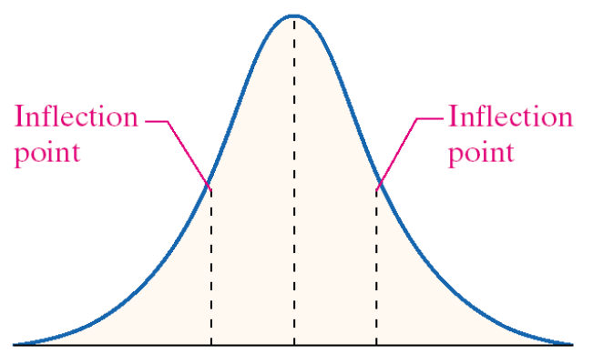

name: inverse layout: true class: center, middle, inverse --- # Intro to Statistial Inference ## Confidence Intervals ### and ## Hypothesis Tests --- layout:false .left-column[ ## Inference ### Motivation ] .right-column[ ## Statistical Inference Many applications of statistics in engineering take the following basic mold: 1. Identify an interval of values that is likely to contain some unknown parameter 2. Quantify "how likely" the interval we identified is to cover the true value of the parameter **Example**</br> A machine filling a container with a liquid will, across all possible containers, dispense a mean volume of liquid, $\mu$. We suspect that $\mu$ is between $10.001$ and $10.002$ liters. **Example**</br> Two methods of performing a surgery are being compared. The first has success rate of $r_1$ and the second has a success rate of $r_2$. We suspect that $r_1 - r_2$ is between 0.2 and 0.3 ] --- layout:false .left-column[ ## Inference ### Motivation ### Concerns ] .right-column[ ### Statistical Inference Of course how confident we are about the range we have depends on the strength of our evidence and the size of the range: With smaller intervals we would naturally be less confident. For instance, - I am very sure that the average weight of a squirrel is between 0 and 100 pounds. - I am less confident that the average weight of a squirrel is between 1.245 and 1.246 poinds. With more evidence (or data) we are more confident. For instance, - If I have a data set consisting of the weight 10,000 captured squirrels, I would be more confident that an interval around the average weight of the captured squirrels would contain the true average weight of a squirrel. - If I have a data set consisting of the weight of 3 captured squirrels, I would have little confidence that an interval around ] --- layout:false .left-column[ ## Inference ### Motivation ### Concerns ] .right-column[ ### Statistical Inference More importantly, the amount of data we have to work with influences our confidence in one of the most important rules in statistics: >**Central Limit Theorem** </br> > If $X_1, X_2, ..., X_n$ are independent and identically distributed (iid) random variables each with mean $\mu$ and variance $\sigma^2$ and let the random variable $\bar{X} = \frac{1}{n} X_1 + \frac{1}{n} X_2 + \ldots + \frac{1}{n} X_n$. Then >1. $E(\bar{X}) = \mu$ >2. $Var(\bar{X}) = \sigma^2/n$ >3. For large $n$, $\bar{X}$ is approximately normally distributed (limit goes to normal...) In otherwords, if $n$ is small we may *not* be approximately normal... ] --- name: inverse layout: true class: center, middle, inverse --- # Large Sample Confidence Intervals --- layout:false .left-column[ ## Inference ## Large $n$ ] .right-column[ ### Statistical Inference In the case of our book, if $n$ is larger than 30, then we have enough data to say that $\bar{x}$ is approximately normal and that it has a mean $\mu$ and a variance $\sigma^2/n$ that match our population mean and variance. In other words, if $n \ge 30$ - $E(\bar{X_n}) = \mu$ - $Var(\bar{X_n}) = \frac{1}{n} \sigma^2$ - $\bar{X_n}$ follows a normal distribution This means that if we know $\sigma$ we can make probability statements about how close the value of $\bar{X_n}$ will be to $\mu$ - even if we don't know $\mu$! ] --- .left-column[ ## Inference ## Large $n$ ] .right-column[ ### The Normal Distribution Regardless of the values of $\mu$ and $\sigma^2$, the normal pdf has the following shape: <center>  </center> Since for $n \ge 30$, $\bar{X}_n$ is approximately normal with mean $\mu$ and standard deviation $\sigma/\sqrt{n}$ then we can say: $$\bar{X}_n \sim N\left(\mu, \frac{1}{n}\sigma^2\right) \rightarrow \frac{\bar{X}_n - \mu}{\sigma/\sqrt{n}} \sim N(0, 1)$$ ] --- .left-column[ ## Inference ## Large $n$ ] .right-column[ ### Creating an Interval We can use this relationship between normal and standard normal to start making probability statements about intervals around $\mu$: $$ \begin{align} 0.95 &= P\left(- 1.96 \le Z \le 1.96\right) \\\\ &= P\left(- 1.96 \le \frac{\bar{X}_n - \mu}{\sigma/\sqrt{n}} \le 1.96\right) \\\\ &= P\left(- 1.96 \frac{\sigma}{\sqrt{n}} \le \bar{X}_n - \mu \le 1.96\frac{\sigma}{\sqrt{n}} \right) \\\\ &= P\left(-\bar{X_n} - 1.96 \frac{\sigma}{\sqrt{n}} \le - \mu \le -\bar{X_n} + 1.96\frac{\sigma}{\sqrt{n}} \right) \\\\ &= P\left(\bar{X_n} - 1.96 \frac{\sigma}{\sqrt{n}} \le \mu \le \bar{X_n} + 1.96\frac{\sigma}{\sqrt{n}} \right) \end{align} $$ which means the probability that $\mu$ is in the interval $\bar{X} \pm 1.96 \frac{\sigma}{\sqrt{n}}$ is 0.95 - i.e., we are 95% confident the interval contains $\mu$. ] --- .left-column[ ## Inference ## Large $n$ ] .right-column[ ### Creating an Interval What this shows is that once we know the value of $\bar{X}_n = \bar{x}_n$ then the interval $(\bar{x}_n - 2\sigma/n, \bar{x}_n + 2\sigma/n)$ has a 95% chance to contain the true value $\mu$. So even though we will not *know* $\mu$, we can be 95% confident that it is in some interval. >**Two-Sided Confidence Interval** </br> >If $z\_{1 - \alpha/2}$ is the value s.t. $P(Z \le z\_{1 - \alpha/2}) = 1 - \alpha/2$ then the for a sample mean $\bar{x}\_n$ with $n \ge 30$ and known $\sigma$, then the interval >$$\bar{x}\_n \pm z\_{1 - \alpha/2} \frac{\sigma}{\sqrt{n}}$$ >defines a $100(1 - \alpha)$% confidence interval ] --- .left-column[ ## Inference ## Large $n$ ] .right-column[ ### Creating an Interval Notice that the confidence interval width changes based on our need for certainty. By looking at some common values of $z_{1 - \alpha/2}$, we can see the trade off: |Desired Confidence | $1-\alpha/2$ | $z_{1-\alpha/2}$ | 2-Sided Interval Width | |-|-|-|-| |80% | 0.10 |1.28 | $2.56 \frac{\sigma}{\sqrt{n}}$ | |90% | 0.05 |1.645 | $3.29 \frac{\sigma}{\sqrt{n}}$ | |95% | 0.025 |1.96 | $3.92 \frac{\sigma}{\sqrt{n}}$ | |98% | 0.001 |2.33 | $4.66 \frac{\sigma}{\sqrt{n}}$ | |99% | 0.0005 |2.58 | $5.16 \frac{\sigma}{\sqrt{n}}$ | Notice that the width depends on three things: 1. The variability of what we are estimating: more variable = larger $\sigma$ = larger interval 2. The size of our sample: larger $n$ = smaller $1/\sqrt{n}$ = smaller interval 3. How confident we choose to be: more confident = larger $z_{1 - \alpha/2}$ = larger interval ] --- .left-column[ ## Inference ## Large $n$ ] .right-column[ **Example** Suppose that we randomly sample 50 ligthbulbs from production and find that the average lifetime of the sample is 420.25 hours. Suppose that we know the variance of the bulbs lifetime is 25.36 hours. - Provide a 80% confidence interval for the true mean lifetime of all bulbs from production. - Provide a 95% confidence interval for the true mean lifetime of all bulbs from production. - Provide a 92% confidence interval for the true mean lifetime of all bulbs from production. ]